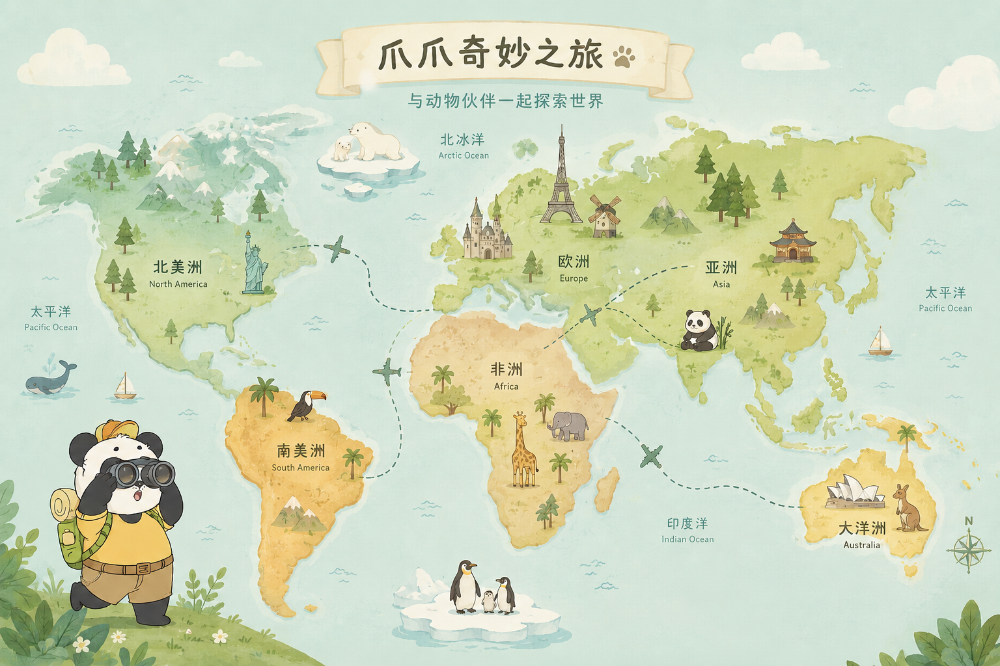
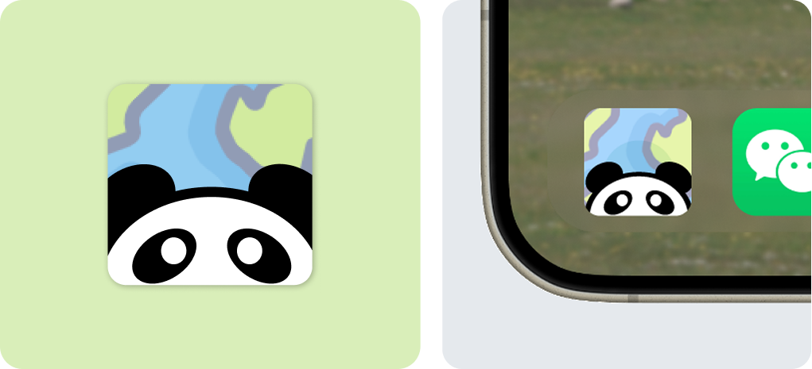
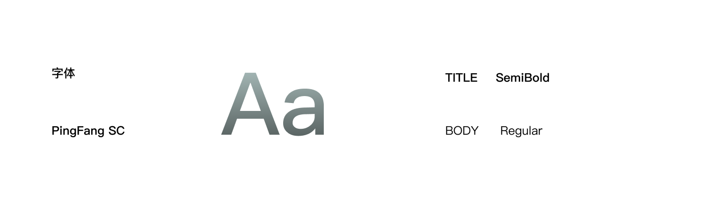
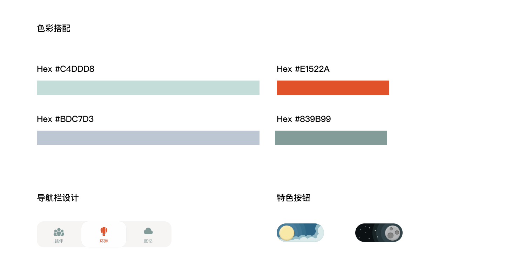
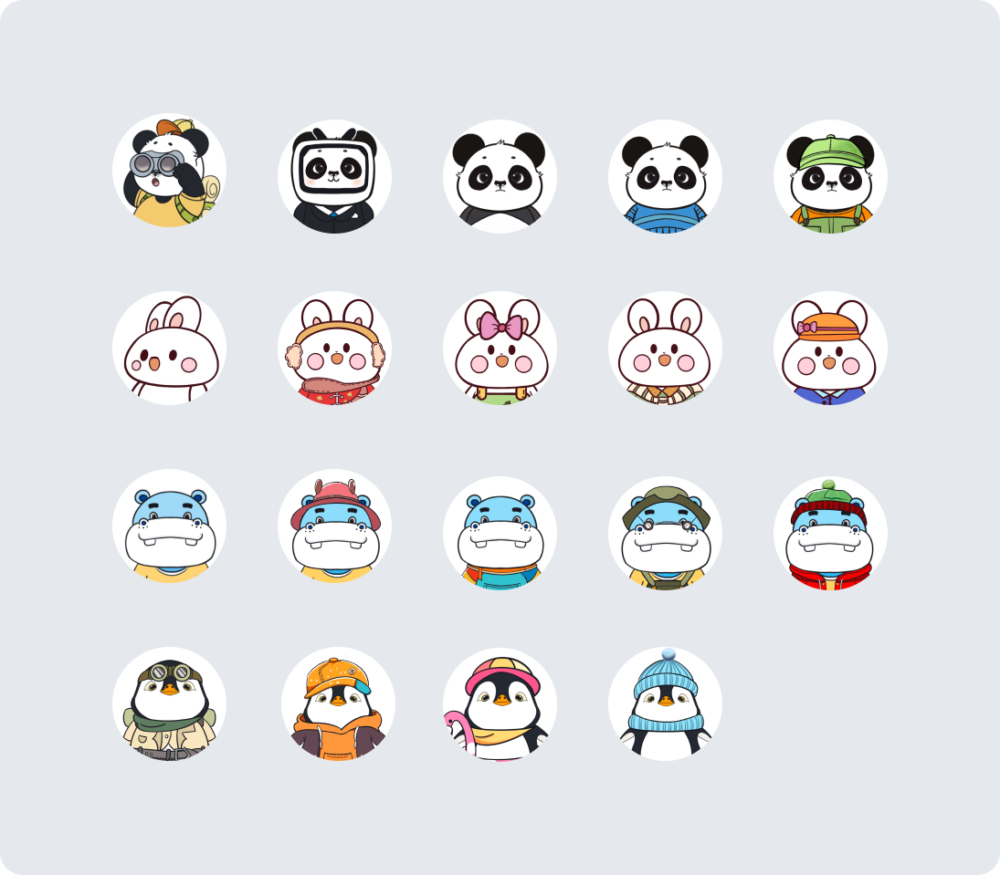
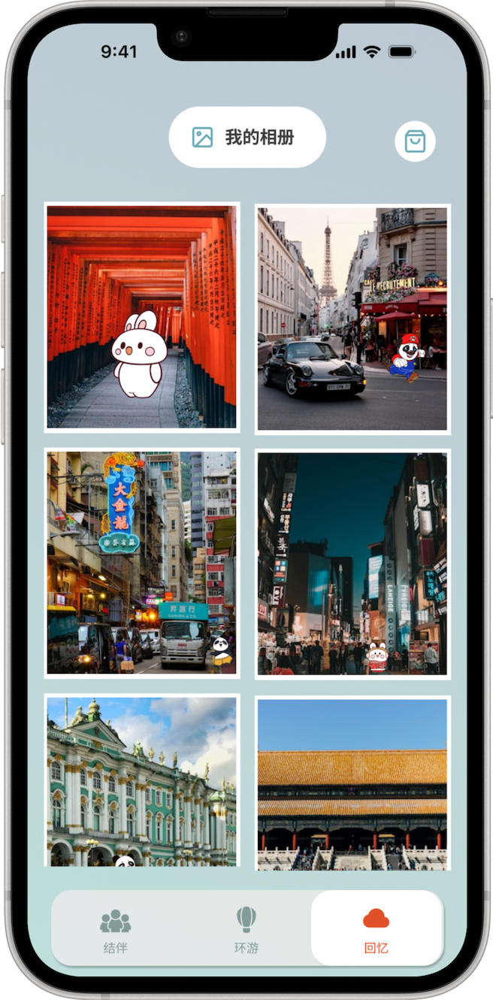
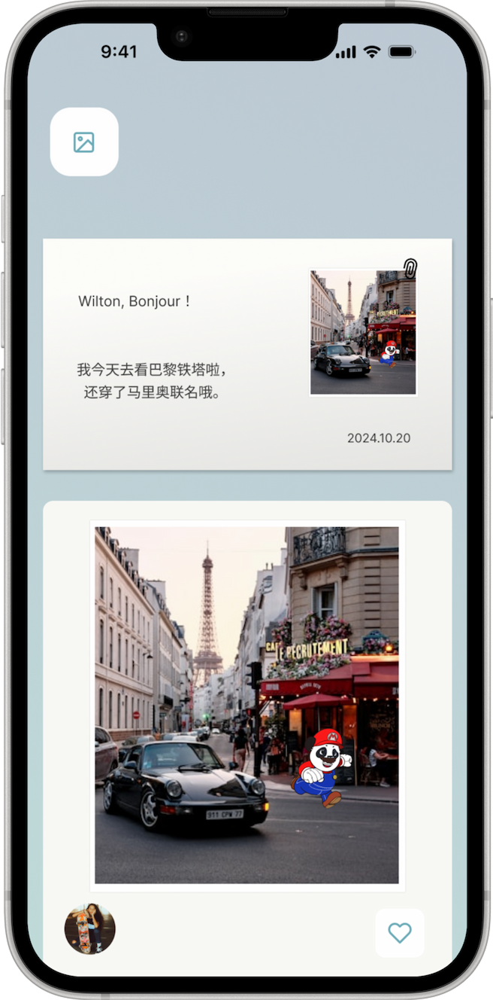
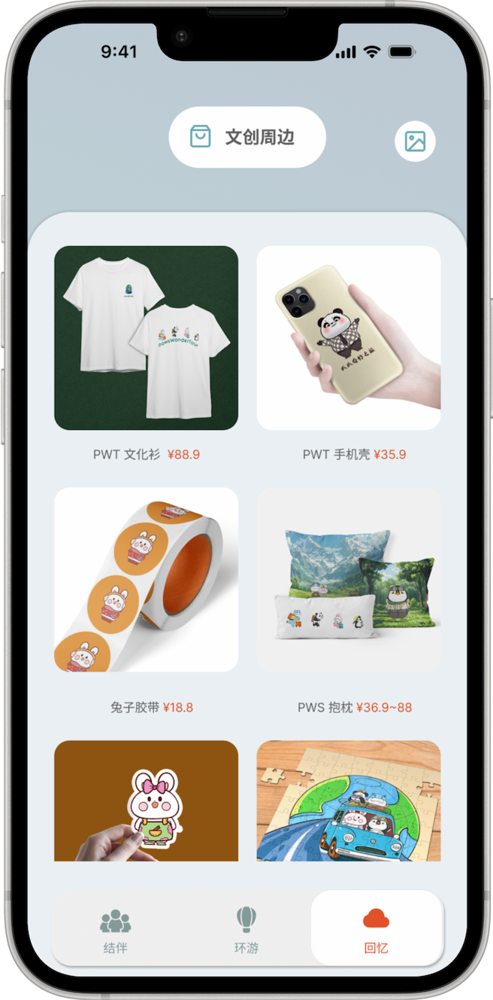

旅行向往者
渴望远方却被时间、金钱或责任所困的人。
"总有一天，我也要亲眼去看看。"
UX/UI Design — Mobile App
与动物伙伴一起探索世界
一款融合虚拟宠物养成、世界探索与旅行收集体验的移动产品，通过陪伴与探索创造持续成长的乐趣。
替我自由。
那些旅行视频评论区里，无数未曾出发的梦想。

总有人向往旷野与远方。但现实中的时间、精力与经济成本，让一场说走就走的旅行成为奢望。
💬 替我看看世界吧
💬 我想去冰岛
💬 替我自由
那些未能启程的遗憾，最终成为《爪爪奇妙之旅》的起点。
渴望远方却被时间、金钱或责任所困的人。
"总有一天，我也要亲眼去看看。"
在日常生活里寻找情感慰藉与陪伴的人。
"有时候，只是想有个小家伙陪在身边。"
享受收集成就、解锁新地点与内容的探索型用户。
"环游世界，从点亮每一个地标开始。"



The Journey Begins · 从相遇到启程，一场奇妙旅程正在展开。
「环游」动态页面是用户与虚拟宠物、其他玩家互动的核心场景，承接了产品"宠物替你环游世界 + 云社交"的核心玩法。你的宠物每天都会给你上传一张配上它自己的风景照，并且会为你讲述今天发生的随机故事。
「结伴」是 APP 的云旅行社交模块，为用户提供两种结伴方式：
1. 好友同行 — 邀请好友一起开启虚拟旅行，实时查看对方宠物的旅行地行程，可互动留言，实现"线上云结伴"。
2. 随机匹配 — 匹配陌生用户一起旅行，拓展同好社交，满足不同社交需求。
多款宠物形象选择，随意更换
（部分皮肤需要游戏货币获取）




「相册」模块作为用户旅行历程的数字档案馆，完整存储了宠物的所有打卡照片与旅行动态。用户可查看每一站的旅行明信片、社交互动记录，并支持实体明信片的线上寄售服务，实现虚拟体验与现实仪式感的衔接。
「文创周边」模块为爪爪 IP 衍生产品商城，提供文化衫、手机壳、文具、家居用品等系列周边。用户可直接选购心仪商品，将虚拟旅程的 IP 形象转化为现实生活中的陪伴载体，同时拓展产品的商业价值与用户粘性。